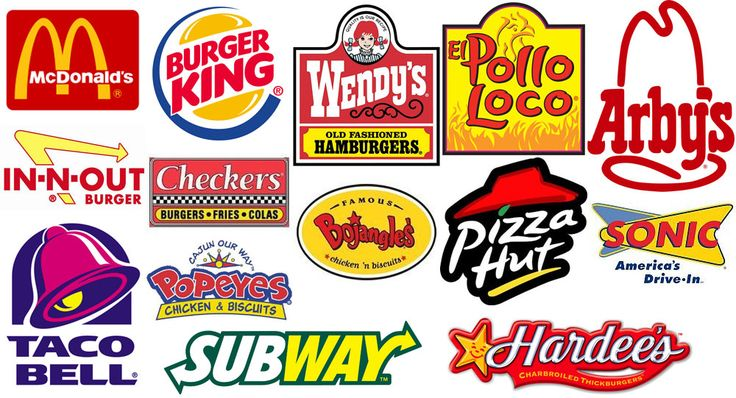

Are you the one who goes to Mcdonald's and Tim Horton's every day at lunch or after shool? If yes, why do you choose to do so? Is it the addicting flavour or taste? Is it because it's convenience? Or is it because of the cheap price with extremely worth deal that can make you full easily just with one small burger? The answer to all these are most likely to be "yes".
I am also a person who is stuck with all these irresistible attractions, but over time, I start to feel like my body is not as healthy as it was before. Fasten weight gainning, some times feeling of stomachache and headache, and even the feeling of nauseous. If you are the one who also recgonized all these changes and symptoms in your body, and are still wondering why these happened, this website will give you the information you need. These symptoms can gradually transform into health risks that can eventually lead to even death! Start to worrying now? It's not too late.